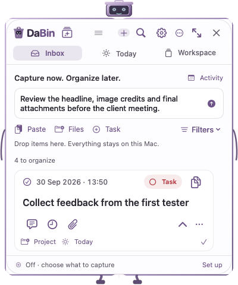

← Design handoffA quieter frame. A clearer next action.
DaBin’s build-53 feature set, reorganized around four visible destinations. This review page contains design specimens; the linked application screens contain product controls only.
Direction comparisonKeep the places visible.
DaBin○ Auto off⌕ ＋ ⚙ ×
InboxTodayWorkspaceActivity
A · Labeled navigation — selected
One click between destinations. Shared placement at
compact and expanded widths. No sidebar.
B · Destination switcher
Saves one row but requires two clicks to move.
The remaining destinations become less discoverable.
A bottom dock was also considered, then rejected: it separates navigation from desktop capture controls and competes with the persistent status area. These are expert judgments, not user-study findings.
Actual-scale comparisonSame footprint. More useful hierarchy.
400 × 480 CSS px outer frame, corresponding to the 380 × 430 pt native content minimum. The source image is a synthetic build-53 render. The after pane is the live redesign, not a claimed screenshot export.
Before · build 53

After · interactive redesign
Purple, with room to breathe.
Canvas · FDFCFE
Ink · 2B2731
Muted · 615A69
Accent · 6D5387
Dark · 1D1C21
Dark accent · AB92C6
Editable source: tokens.css. Source presets and custom colors are available in the real product Settings screen. Resolved accents adapt for legibility.
Component grammarUseful, readable, familiar.
One primary action
Save note Back8px control radius.
Visible keyboard focus.
Named icon actions.
State beyond color
○ Task ✓ CompletedOriginal content type remains.
Task conversion retains receipt.
Completion is reversible.
Honest recovery
Unfinished edits restored.
Save changes to commit.
Notes autosave.
Detail edits have an explicit save.
No false success on storage errors.
Every feature keeps a home.